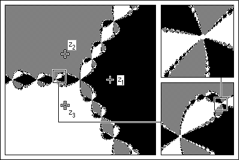

Background Most people are familiar with the experience of standing between two parallel mirrors, seeing a sequence of smaller and smaller copies of themselves shrinking into the distance.
Of course, this is no more a fractal than is a collection of nested Russian dolls.
However, by using round mirrors (silvered plastic Christmas tree ornaments work well), and more than two of them, we can construct optical versions of the Sierpinski gasket.
One of the simplest examples of fractal basin boundaries arises in
Newton's method
applied to finding roots of the cubic equation
The roots are familiar:
The problem, posed originally by Arthur Cayley, is to map the set of initial values for which Newton's method converges to each root. These are called the basins of attraction of the roots. (These are painted black, white, and grey in the picture below.)
That Cayley could not solve this problem is no surprise, because the basins of attraction are quite complicated and have fractal boundaries. This is illustrated by the picture on the left, and the two magnifications on the right.
|  |
The boundaries between these basins have the Wada property:
This is true to all levels of magnification. No matter how closely we look, black points lie between grey and white points, white points lie between black and grey points, and grey points lie between black and white points.
We shall illustrate a similar feature with the optical gasket array.
Return to Optical Gasket Lab